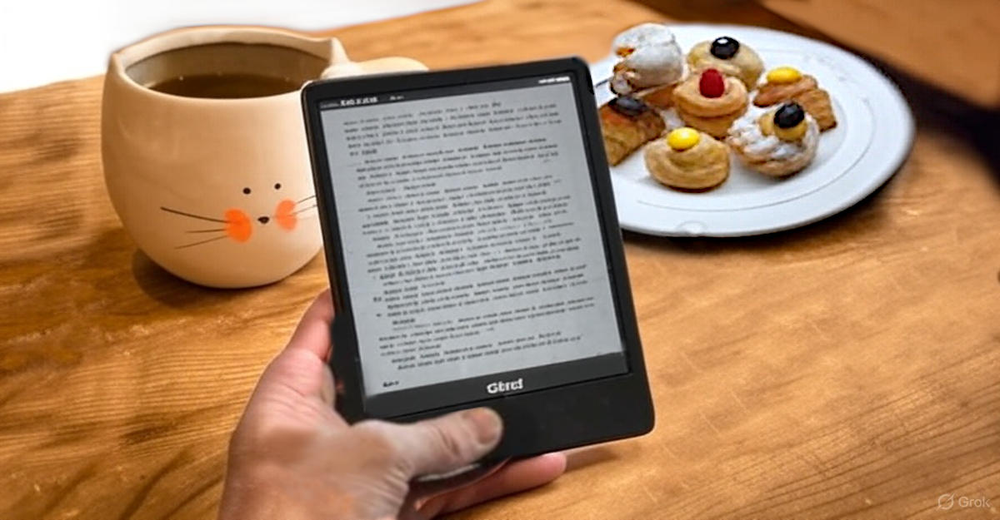

Come leggere una chat con un AI
I documenti che riportano dialoghi con chatbot sono un genere emergentee possono essere letti in maniera più agevole e piacevole seguendo poche regole.
1. cominciare dal fondo e risalire,
2. leggere prima tutti i prompt (umano),
3. eventualmente le risposte del chatbot.
Infatti, una best-practice per il prompting è riportare in quello successivo i punti critici della risposta precedente per discuterli ulteriormente.
Introduzione
La tecnologia dei chatbot attuali è relativamente recente e risale al dicembre 2022 quando OpenAI mise online ChatGPT 3.5.
A job interview with ChatGPT v3.5 (2022-12-07, EN, PDF)
Da allora relativamente molte cose sono cambiate, in particolare il nostro rapporto con questi strumenti e la profilerazione di molti e diversi strumenti dotati di intelligenza artificiale, inclusi altri
chatbot fra i quali anche istanze ridotte che possono funzionare in locale direttamente su laptop/PC comuni.
Soprattutto il nostro rapporto con loro è cambiato e, ovviamente, fra le novità emergenti ci sono anche documenti che riportano lunghi dialoghi tra un umano e un chatbot. Che per altro è stata fin dagli albori di questa tecnologia un formato emergente come dimostra l'articolo sopra citato.
La ragione di questa novità emergente dipende principalmente da tre fattori:
1. giochi di ruolo: sono sempre esistiti e i chatbot per loro stessa natura di strumenti dedicati alla creazione di testi sono adatti per loro stesso design.
2. notevoli capacità: nonostante la capacità di ragionare dei chatbot si limiti all'intelligenza lessicale, comunque le loro performance sono "relativamente" impressionanti.
3. ci piace il gossip: siamo animali sociali a cui piace il gossip e quindi essere spettatori di dibattiti e confronti, infatti il genere è piuttosto antico, nel teatro.
Però dal formato teatrale risalente alla tradizione ellenistica dell'antica Grecia ad oggi il nostro approccio alla lettura è cambiato, e soprattutto in tempi moderni direzionando verso una modalità analitica in cui il lettore è accompagnato lungo un percorso di ragionamento oppure una narrazione.
Sotto questo punto di vista, i dialoghi con i chatbot - pur mantenendo strutturalmente la stessa natura - hanno una sorta di novità intrinseca che ci impone di rivedere le nostre modalità di leggerli.
Cominciare dal fondo e risalire
Quando si affrontano dialoghi con i chatbot come forma letteraria, come gli aritcoli pubblicati su:
ChatGPT Answered Prompts
Questi tipo di articoli possono essere usufruiti in maniera agevole e piacevole seguendo poche regole generali.
1. Generalmente il primo prompt è di apertura e spesso ha un carattere di poca attinenza con le conclusioni, talvolta è persino irrilevante ma solo un modo di "rompere il ghiaccio".
Ovviamente questa necessità non esiste con i chatbot, ma noi umani siamo fatti così, abbiamo bisogno del nostro tempo per "carburare" ed entrare nel vivo della questione.
2. Quindi saltare alle conclusioni è un ottimo modo per capire di cosa veramente il documento anche perché come ho autore ho una forte attitudine ad usare i titoli per il bait-clicking
Questa attitudine è meno spinta su questo sito ma resta sempre un'ottima regola generale di non crearsi false aspettative per via del titolo ovvero giudicare il libro dalla copertina.
Attualmente i chatbot sono prolissi oltre la gestibilità umana perché scrivere testo (sputare token a raffica) è meno computazionalmente intensivo di riassumere e concentrarsi sulle questioni essenziali.
Curiosamente il rapporto S/N nelle persone segue pattern simili. Comunque, mentre la sintesi non è un grosso problema per questi chatbot, comprendere quali siano i punti salienti di un discorso è qualcosa che al momento gli è abbastanza "alieno". Oltre al fatto che in alcuni contesti, i punti salienti sono soggettivi e più in generale "l'essenziale è invisibile agli osservatori distratti".
3. Quindi potete agilmente saltare le risposte del chatbot che la parte rilevante della sua risposta viene riferita nel prompt successivo.
Nonostante questo le risposte sono in genere riportate integralmente, eccetto vaniloqui palesi che vengono riassunti con "bla bla" perché le non tutte le raffiche di token meritano la nostra attenzione.
4. Una volta saltati alle conclusioni potete risalire leggendo fino alla parte che per voi smette di essere rilevante oppure arrivare fino all'origine dell'argomento.
Questo modo di procedere anti-cronologico è, generalmente, inusuale ma per questo tipo di documenti è molto efficace e anche molto efficiente. D'altronde con l'evoluzione della tecnologia anche i modelli di letteratura cambiano e quindi il nostro modo di leggerli. Null'altro che una sorta di adattamento, fra i tanti che abbiamo già affrontato.
La peer-review, un altro genere
Anche perché dialogare con un chatbot non ha lo scopo di ascoltare l'opinione di un oracolo ma piuttosto quella di sfruttarne il confronto per capire come spiegare le cose che interiormente a noi sono chiare -
l'ovvio per noi, non è poi così ovvio per gli altri - ma soprattutto capire cosa potrebbe essere frainteso o non compreso, e quindi va spiegato meglio.
In altri casi ho usato il dialogo con il chatbot per fare peer-review alle mie idee ma questo è un utilizzo già molto più metodologico e specifico seppure possa apparire come un dialogo. Invece, si tratta di un'analisi testuale che richiede molto più impegno e rigorosità. Motivo per il quale ho scritto un prompt di sistema specifico.
The system prompt alchemy - rules set escalation
Generalmente mi piace scrivere ma non mettermi in cattedra, però ogni tanto qualcuno mi ci tira per la giacchetta... e chi diavolo sono io per non accontentarli?
Mi piace l'odore di prima mattina di altri "clienti" ben serviti secondo dovere e merito. LOL
Ricezione da parte ChatGPT
Il chatbot è stato inizializzato con il prompt di sistema di cui sopra il link e poi gli è stato posto questo quesito riguardo alla parte sopra di questo documento.
Qui viene riportata sola la conclusione, reperire il resto della risposta lo si lascia per esercizio al lettore.
PROMPT
Ignora i link in questo documento (attachment) e proponi un'analisi, in particolare riguardo al "modello di letteratura emergente" citato e all'utilità e chiarezza dei consigli forniti.
[... omissis ...]
CONCLUSIONE
Il documento [questo articolo] fornisce una guida chiara e utile per approcciare la lettura dei testi basati su interazioni con chatbot, proponendo un metodo pratico per evitare dispersioni e focalizzarsi sui contenuti più rilevanti.
Il concetto di "letteratura emergente" è ben argomentato e colloca il formato dei dialoghi IA all'interno di un'evoluzione naturale dei modelli di lettura e scrittura.
L'integrazione della peer-review con IA apre infine uno spunto interessante su come questi strumenti possano essere utilizzati anche per il miglioramento della comunicazione e della riflessione personale.
Conclusione e riassunto
Come si legge questa chat? Prima i prompt dell'umano, tutti insieme, ignorando le risposte del chatbot. Poi se l'argomento interessa allora si leggono le risposte del chatbot e in particolare quelle relative ai prompt più interessanti. Si tratta di una lettura non lineare ma più propensa alla formazione di una propria opinione e/o alla riflessione.
Altrimenti, si può leggere come fosse un romanzo in cui si alternano due voci, così come fu scritto "dialogo sopra i due massimi sistemi del mondo" (
1632 ), in cui anche la seconda voce era comunque scritta dallo stesso autore che impersonava la prima.
Mentre con un chatbot la seconda voce è, entro una certa misura, il riflesso della prima nello stagno delle conoscenze acquisite del chatbot. Perché occorre sempre tenere presente che questi strumenti di intelligenza artificiale rispondono in "risonanza" al nostro prompt, rispetto alle nozioni "apprese" che però null'altro sono che una raccolta di umana letteratura.
Sicché i chatbot null'altro sono che strumenti di "riflessione" piuttosto che oracoli.
Share alike
© 2025, Roberto A. Foglietta <roberto.foglietta@gmail.com>, CC BY-NC-ND 4.0